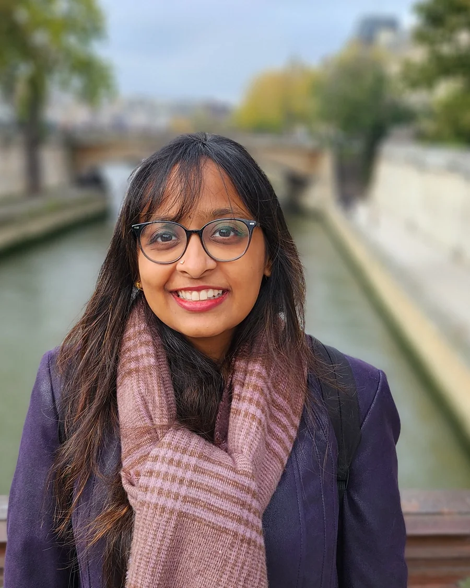
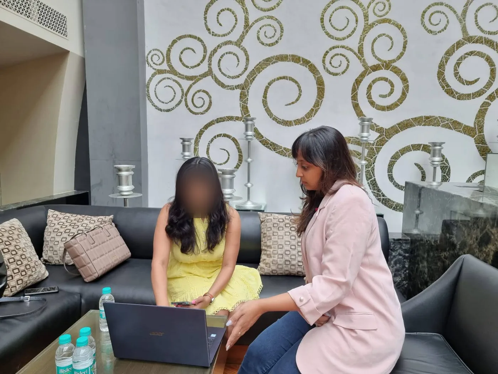
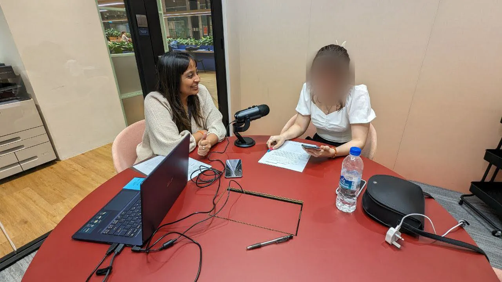

I work on real-world problems, and I start with research.
I’m a senior UX designer and researcher with more than eight years of experience on B2B and B2C platforms used across Asia Pacific and beyond.
My work has ranged from streamlining government portals to scaling e-commerce rollouts across a region. Whatever the brief, I own the UX approach end to end: planning the activities, estimating the effort, and turning an ambiguous problem into user flows, prototypes and systems that a team can build and reuse.
I trained as a mechanical engineer in Mumbai and studied smart product design at Nanyang Technological University in Singapore. I joined Convertium, a digital agency in Singapore, in 2017 and grew from junior UX designer to consultant, working with product managers, developers, creative teams and client stakeholders at every level. Along the way I’ve mentored junior designers and interns, built the team’s Figma design system, and written its standard operating procedures.
I’m now based in San Francisco, consulting for Convertium remotely and taking on freelance UX strategy work. My methods and tools, with the projects behind each, are on the Skills page.




Experience
- 2025–presentUX Consultant, Convertium (remote)
Won and led website redesigns for the Singapore Red Cross and fintech startup audax. Mentor to two junior UX designers.
- 2025–presentUX Consultant, freelance
UX strategy for an events booking startup in Singapore, and a rebrand and website redesign for a yoga school in India.
- 2024Relocated to the US
Moved from Singapore to San Francisco.
- 2022–2024Senior UX Designer, Convertium
Built the company-wide Figma design system. Led the TOUCH website redesign and volunteering portal, redesigned internal tools for Avient’s manufacturing and sales teams, and optimized EDB’s navigation and home page.
- 2019–2022UX Designer, Convertium
Owned UX strategy for Toyota’s website revamp across 17 Asia Pacific markets. Ran A/B testing for Lexus, global research for an EDB B2B portal, and a Shopify UX framework for Make Up For Ever’s regional e-commerce rollout.
- 2017–2019Junior UX Designer, Convertium
Redesigned the Lexus Asia Pacific portal, designed a multi-room booking feature for Marina Bay Sands, and took NTUC Income’s claims process from offline to fully digital.
Education
- MSc Smart Product DesignNanyang Technological University, Singapore, 2017
- BEng Mechanical EngineeringK.J. Somaiya College of Engineering, Mumbai, 2016
Certifications
- Nielsen Norman Group UX CertificateDesign Tradeoffs and UX Decision-Making; Lean UX and Agile; Omnichannel Journeys and Customer Experience; Service Blueprinting
- Google UX DesignCoursera
- Adobe Design Fundamentals with AI; Adobe Generative AI Content CreationCoursera